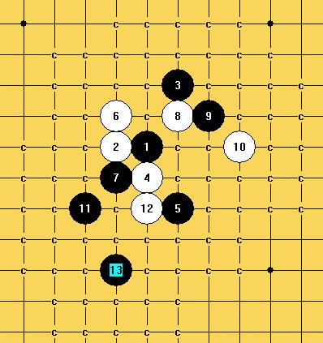
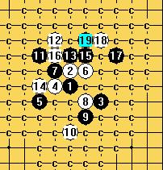
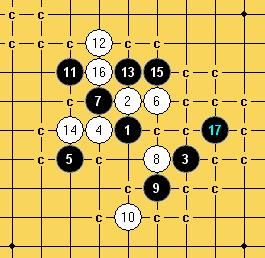

新月之疑问
#1 新月之疑问 作者：茗弈小刀 发表时间：2009-5-18 10:22:49
=======上图对应的爱五子棋谱代码如下，以便你拆解：========
h8h7j9g8f9i7g7i9i10h11
======================================================
请教大家11手有没必胜点？
［ 静待花开 于 2009-5-30 17:56:29 时花20金币送鲜花一朵］
［ 静待花开 于 2009-5-30 17:56:35 时花20金币送鲜花一朵］
#2 Re:新月之疑问 作者：小红眼镜 发表时间：2009-5-18 10:26:16
记得李洪斌老师的博客里面曾经介绍过这个型的变化，不知道是不是您要的呢？
http://hi.baidu.com/lihongbin/blog/item/37bad717956f490dc93d6df6.html
［ 失落刀 于 2009-5-18 10:44:48 时花20金币送鲜花一朵］
［ 茗弈小刀 于 2009-5-18 13:12:00 时花20金币送鲜花一朵］
#3 Re:新月之疑问 作者：lfc 发表时间：2009-5-18 10:41:10
=======上图对应的爱五子棋谱代码如下，以便你拆解：========
h8h7j9g8f9i7g7i9i10h11f6
===================================这是其中一个杀法，可以拆看看！还有一个我已经地毯了！===================
［ 失落刀 于 2009-5-18 10:45:07 时花20金币送鲜花一朵］
［ 潇洒 于 2009-5-18 11:14:57 时花20金币送鲜花一朵］
［ 茗弈小刀 于 2009-5-18 13:12:32 时花20金币送鲜花一朵］
#4 Re:新月之疑问 作者：lfc 发表时间：2009-5-18 10:49:11
应该说6手以后黑棋就可以必胜了！好像老鬼的棋谱里有具体的杀法！#5 Re:新月之疑问 作者：茗奕的飞猪 发表时间：2009-5-18 12:19:24
刀刀研究棋好认真哦，佩服
#6 Re:新月之疑问 作者：茗弈小刀 发表时间：2009-5-18 13:09:11
谢谢2.3楼的朋友，有几个11据说都能杀，但拆到后来发现一些强防点，不好地毯。。。。。。。。。。。#7 Re:新月之疑问 作者：无尽 发表时间：2009-5-18 13:16:48
新山已经终结了，3楼的11-f10可以必胜。［ 失落刀 于 2009-5-18 15:12:48 时花20金币送鲜花一朵］
#8 Re:新月之疑问 作者：刀魂 发表时间：2009-5-18 13:17:09
个人觉得 最强11在 f8，这个我地毯了
=======上图对应的爱五子棋谱代码如下，以便你拆解：========
h8h7j9g8f9i7g7i9i10h11f8
======================================================
#9 Re:新月之疑问 作者：忧郁的双眼 发表时间：2009-5-18 13:21:59
为什么不换另外一个七
偶喜欢那个
#10 Re:新月之疑问 作者：茗弈小刀 发表时间：2009-5-18 13:35:15
=======上图对应的爱五子棋谱代码如下，以便你拆解：========
h8h7j9g8f9i7g7i9i10h11f8e9
======================================================
#11 Re:新月之疑问 作者：賢周 发表时间：2009-5-18 14:11:01
=======上图对应的爱五子棋谱代码如下，以便你拆解：========
h8h7j9g8f9i7g7i9i10h11f8e9h10g10e7d6k10l10j11
======================================================
=======上图对应的爱五子棋谱代码如下，以便你拆解：========
h8h7j9g8f9i7g7i9i10h11f8e9h10j10d7
======================================================
［ 茗弈小刀 于 2009-5-18 15:00:06 时花20金币送鲜花一朵］
#12 Re:新月之疑问 作者：茗弈小刀 发表时间：2009-5-18 14:59:26
=======上图对应的爱五子棋谱代码如下，以便你拆解：========
h8h7j9g8f9i7g7i9i10h11f8e9h10f10
======================================================
#13 Re:新月之疑问 作者：lfc 发表时间：2009-5-18 15:59:15
楼上的这个12手也是必败=======上图对应的爱五子棋谱代码如下，以便你拆解：========
h8h9j7g8f7i9g9i7i6h5f8e7d10
#14 Re:新月之疑问 作者：茗弈小刀 发表时间：2009-5-18 17:02:37
=======上图对应的爱五子棋谱代码如下，以便你拆解：========
h8h9j7g8f7i9g9i7i6h5f8e7d10e9f10f9e10c10g12e11
======================================================
#15 Re:新月之疑问 作者：lfc 发表时间：2009-5-18 17:50:19
19手又错
#16 Re:新月之疑问 作者：lfc 发表时间：2009-5-18 17:54:16
不能说有错！这句话我更正，还有一个点可以考虑！#17 Re:新月之疑问 作者：lfc 发表时间：2009-5-18 18:00:14
刀魂大师好像说他地毯了这个12手，那我就等刀魂大师的指点，大师都没说我就不敢说了！
#18 Re:新月之疑问 作者：茗弈小刀 发表时间：2009-5-18 18:27:20
没看到更好的19呀，请楼上朋友指点，谢谢。#19 Re:新月之疑问 作者：侯军学棋 发表时间：2009-5-18 22:11:01
=======上图对应的爱五子棋谱代码如下，以便你拆解：========
h8h7j9g8f9i7g7i9i10h11h10g10e7
======================================================这个应该可以必胜
#20 Re:新月之疑问 作者：无尽 发表时间：2009-5-18 22:16:10
=======上图对应的爱五子棋谱代码如下，以便你拆解：========
h8h7j9g8f9i7g7i9i10h11h10g10e7e6
======================================================
给一个防玩玩
#21 Re:新月之疑问 作者：lfc 发表时间：2009-5-19 9:11:59
既然棋力超群的刀魂大师不敢跟帖，那我给一个思路=======上图对应的爱五子棋谱代码如下，以便你拆解：========
h8h9j7g8f7i9g9i7i6h5f8e7d10e9f10f9e10c10j6
======================================================
［ 茗弈小刀 于 2009-5-19 12:24:39 时花20金币送鲜花一朵］
#22 Re:新月之疑问 作者：lfc 发表时间：2009-5-19 9:14:02
呵呵！如果可以就一定要多给几个威望了，这样才能鼓励我这个老家伙来发贴啊！如果不好就删了吧！#23 Re:新月之疑问 作者：方圆之外 发表时间：2009-5-19 9:15:53
。。。 这个13拆了半天了。没拆出来个什么。郁闷。#24 Re:新月之疑问 作者：方圆之外 发表时间：2009-5-19 9:16:54
不过觉得可以借鉴李洪斌老师的一些想法。。应该还可以拆出来。#25 Re:新月之疑问 作者：lfc 发表时间：2009-5-19 9:20:10
很多人就是想等待一个局面的地毯，然后可以不用动脑子的等待下载。我很反感这种不劳而获的人！#26 Re:新月之疑问 作者：lfc 发表时间：2009-5-19 9:21:01
我的跟帖到此为止！#27 Re:新月之疑问 作者：茗弈小刀 发表时间：2009-5-19 9:51:41
=======上图对应的爱五子棋谱代码如下，以便你拆解：========
h8h9j7g8f7i9g9i7i6h5f8e7d10e9f10f9e10c10j6k6j5j8k4l3
======================================================
#28 Re:新月之疑问 作者：忧郁的双眼 发表时间：2009-5-19 10:15:52
=======上图对应的爱五子棋谱代码如下，以便你拆解：========
h8h9j7g8f7i9g9i7i6h5f8e7d10e9f10f9e10c10j6k6g12
======================================================
然后再回来走这个啦
这样就两头连起来搞
［ 茗弈小刀 于 2009-5-19 12:25:33 时花20金币送鲜花一朵］
#29 Re:新月之疑问 作者：忧郁的双眼 发表时间：2009-5-19 10:16:32
=======上图对应的爱五子棋谱代码如下，以便你拆解：========
h8h9j7g8f7i9g9i7i6h5f8e7d10e9f10f9e10c10j6k6g12e11f11h13f13
======================================================
用黑石做的
不一定精确
不过应该杀了
#30 Re:新月之疑问 作者：撒蓉儿 发表时间：2009-5-19 12:05:04
=======上图对应的爱五子棋谱代码如下，以便你拆解：========
h8h7j9g8f9i7g7i9i10h11f8e9d6e7f6f7e6c6j10k10e5d4g4
======================================================
［ 茗弈小刀 于 2009-5-19 12:21:16 时奖励此帖[金币加 20 威望加1］
#31 Re:新月之疑问 作者：撒蓉儿 发表时间：2009-5-19 12:06:45
=======上图对应的爱五子棋谱代码如下，以便你拆解：========
h8h7j9g8f9i7g7i9i10h11f8e9d6e7f6f7e6c6j10j8
======================================================先吃饭去了哈
［ 茗弈小刀 于 2009-5-19 16:20:50 时花20金币送鲜花一朵］
#32 Re:新月之疑问 作者：茗弈小刀 发表时间：2009-5-19 12:19:49
回小眼兄：
=======上图对应的爱五子棋谱代码如下，以便你拆解：========
h8h9j7g8f7i9g9i7i6h5f8e7d10e9f10f9e10c10j6k6g12e11f11h13f13i11
======================================================
我不觉得2边能连起来
#33 Re:新月之疑问 作者：茗弈小刀 发表时间：2009-5-19 12:23:24
 我的蓉儿就是厉害！
我的蓉儿就是厉害！
#34 Re:新月之疑问 作者：忧郁的双眼 发表时间：2009-5-19 12:26:00
#35 Re:新月之疑问 作者：茗弈小刀 发表时间：2009-5-19 12:28:34
=======上图对应的爱五子棋谱代码如下，以便你拆解：========
h8h9j7g8f7i9g9i7i6h5f8e7d10e9f10f9e10c10j6k6g12e11f11h13f13i11d9c8i10h11
======================================================
#36 Re:新月之疑问 作者：茗弈小刀 发表时间：2009-5-19 12:31:28
算了小眼兄，这个20蓉儿妹妹那个杀最简单应该，我们看31楼那个20吧。谢谢眼兄。#37 Re:新月之疑问 作者：忧郁的双眼 发表时间：2009-5-19 12:31:46
=======上图对应的爱五子棋谱代码如下，以便你拆解：========
h8h9j7g8f7i9g9i7i6h5f8e7d10e9f10f9e10c10j6k6g12e11f11h13h11
======================================================
这个啦~！
［ 茗弈小刀 于 2009-5-19 12:35:28 时奖励此帖[金币加 20 威望加1］
#38 Re:新月之疑问 作者：茗弈小刀 发表时间：2009-5-19 12:35:55
恩这个杀了，很漂亮！
#39 Re:新月之疑问 作者：撒蓉儿 发表时间：2009-5-19 14:26:33
 能得到姐姐的赞赏，蓉儿很荣幸哦~~~
能得到姐姐的赞赏，蓉儿很荣幸哦~~~
#40 Re:新月之疑问 作者：茗弈小刀 发表时间：2009-5-19 16:18:37
我的小天使--蓉儿
#41 Re:新月之疑问 作者：自来水 发表时间：2009-5-21 19:47:22
……LS，寡人数加你QQ未果，。，，。
#42 Re:新月之疑问 作者：侯军学棋 发表时间：2009-5-21 20:31:20
=======上图对应的爱五子棋谱代码如下，以便你拆解：========
h8h7j9g8f9i7g7i9i10h11f8e9d6e7f6f7e6c6j10j11
======================================================这个20怎么杀
#43 Re:新月之疑问 作者：侯军学棋 发表时间：2009-5-21 20:32:28
=======上图对应的爱五子棋谱代码如下，以便你拆解：========
h8h7j9g8f9i7g7i9i10h11f8e9d6e7f6f7e6c6j10h10
======================================================不会杀
#44 Re:新月之疑问 作者：冷面孤煞 发表时间：2009-5-21 20:33:18
=======上图对应的爱五子棋谱代码如下，以便你拆解：========
h8h7j9g8f9i7g7i9i10h11f6f8e8e7d7c6d6d5d9
======================================================一种杀杀杀
#45 Re:新月之疑问 作者：冷面孤煞 发表时间：2009-5-21 20:34:34
=======上图对应的爱五子棋谱代码如下，以便你拆解：========
h8h7j9g8f9i7g7i9i10h11f6f8e8e7d6e5d9
======================================================杀杀杀杀二种
#46 Re:新月之疑问 作者：冷面孤煞 发表时间：2009-5-21 20:36:06
=======上图对应的爱五子棋谱代码如下，以便你拆解：========
h8h7j9g8f9i7g7i9i10h11f6f8e8e7d7c6d6d8e5d4f4
======================================================3种杀杀杀杀杀
［ 茗弈小刀 于 2009-5-22 9:47:42 时花20金币送鲜花一朵］
#47 Re:新月之疑问 作者：冷面孤煞 发表时间：2009-5-21 20:43:45
 火了，地毯一下，发上来了，给给威望，肚子笑疼了
火了，地毯一下，发上来了，给给威望，肚子笑疼了
#48 Re:新月之疑问 作者：茗弈小刀 发表时间：2009-5-22 9:47:10
楼上这个调皮娃娃，你那个离杀还早得很呢，现在我们是在看哪个11能地毯。#49 Re:新月之疑问 作者：流逝 发表时间：2009-5-22 15:29:31
11=f10可以地毯的，至于刀魂大师说的那个 不敢苟同。。。。#50 Re:新月之疑问 作者：冷面孤煞 发表时间：2009-5-22 17:57:46
 刀妹妹，可以地毯的11如下，哥哥就不发上来了
刀妹妹，可以地毯的11如下，哥哥就不发上来了
=======上图对应的爱五子棋谱代码如下，以便你拆解：========
h8h7j9g8f9i7g7i9i10h11h10
======================================================
知道俺是谁吗？709889856欧耶
#51 Re:新月之疑问 作者：解放者 发表时间：2009-5-23 0:46:33
啊啊！37楼的走法如果白26下在I6怎么杀？我算了半天也算不出来啊。把脑袋都想小了后又拿扫雷游戏打了N次草稿还是算不出来。
你们是目算就能看出来吗？
#52 Re:新月之疑问 作者：茗弈如梦 发表时间：2009-5-23 7:04:57
F10 H6都能必胜,#53 Re:Re:新月之疑问 作者：方圆之外 发表时间：2009-5-23 8:37:18
引用：
原文由 冷面孤煞 发表于 2009-5-22 17:57:46 :
=======上图对应的爱五子棋谱代码如下，以便你拆解：========
h8h7j9g8f9i7g7i9i10h11h10
======================================================
这个黑优吧。。怎么会必胜。
#54 Re:新月之疑问 作者：没定式随便下 发表时间：2009-5-23 8:54:59
哪个11只要能胜不都一样么，有什么好炫耀的，H6那个11最后还不是要通回去，而且有两个14够呛。大部分人手上的谱都是F10那个11吧，很早就终结了。
#55 Re:新月之疑问 作者：茗弈如梦 发表时间：2009-5-23 9:03:43
楼上的,,两个14够呛说明你没看细,,你看了几个13手
#56 Re:新月之疑问 作者：没定式随便下 发表时间：2009-5-23 9:12:48
=======上图对应的爱五子棋谱代码如下，以便你拆解：========
h8h7j9g8f9i7g7i9i10h11h10g10
======================================================
还请楼上的告诉我强的13，我也好拆拆看。
#57 Re:新月之疑问 作者：茗弈小刀 发表时间：2009-5-23 14:20:40
=======上图对应的爱五子棋谱代码如下，以便你拆解：========
h8g8i10h7i6g9g7i9j9k8f6h6h5g4
======================================================
这个14怎么杀呢？
#58 Re:Re:新月之疑问 作者：解放者 发表时间：2009-5-23 16:01:50
引用：
原文由 茗弈如梦 发表于 2009-5-23 7:04:57 :
F10 H6都能必胜,
两个点都算不出啊。应该已经试了所有顺序了啊。
#59 Re:新月之疑问 作者：忧郁的双眼 发表时间：2009-5-23 18:05:02
=======上图对应的爱五子棋谱代码如下，以便你拆解：========
h8g8i10h7i6g9g7i9j9k8f6h6g4
======================================================
#60 Re:新月之疑问 作者：独爱五子连珠 发表时间：2009-5-23 18:08:14
=======上图对应的爱五子棋谱代码如下，以便你拆解：========
h8g8i10h7i6g9g7i9j9k8f6h6g4f5e4d4
======================================================
请教楼上的LS怎么杀？谢
#61 Re:新月之疑问 作者：忧郁的双眼 发表时间：2009-5-23 19:05:34
=======上图对应的爱五子棋谱代码如下，以便你拆解：========
h8g8i10h7i6g9g7i9j9k8f6h6g4f5e4d4i4g5h5f3i3i7j8
======================================================
应对无误的话
黑上面杀
你可以仔细下下
#62 Re:新月之疑问 作者：忧郁的双眼 发表时间：2009-5-23 19:07:06
=======上图对应的爱五子棋谱代码如下，以便你拆解：========
h8g8i10h7i6g9g7i9j9k8f6h6g4f5e4d4i4g5h5f3j3k2i3i7j8
======================================================
［ 茗弈小刀 于 2009-5-23 21:33:33 时花20金币送鲜花一朵］
#63 Re:Re:新月之疑问 作者：茗弈如梦 发表时间：2009-5-23 20:36:35
引用：
原文由 独爱五子连珠 发表于 2009-5-23 18:08:14 :
=======上图对应的爱五子棋谱代码如下，以便你拆解：========
h8g8i10h7i6g9g7i9j9k8f6h6g4f5e4d4
======================================================请教楼上的LS怎么杀？谢
=======上图对应的爱五子棋谱代码如下，以便你拆解：========
h8h9j7g8f7i9g9i7i6h5f10f8d9e10e8c10f9d7g11e9f12f11g13
======================================================
［ 茗弈小刀 于 2009-5-23 21:33:12 时奖励此帖[金币加 20 威望加1］
#64 Re:新月之疑问 作者：小帮帮 发表时间：2009-5-23 21:16:03
都好厉害啊！#65 Re:新月之疑问 作者：茗弈小刀 发表时间：2009-5-23 21:34:30
谢谢小眼兄指点，如梦个更简单明了推荐。#66 Re:新月之疑问 作者：茗弈小刀 发表时间：2009-5-23 21:36:06
那么我们还有一个12要解决了：=======上图对应的爱五子棋谱代码如下，以便你拆解：========
h8h9j7g8f7i9g9i7i6h5f10j8
======================================================
#67 Re:新月之疑问 作者：忧郁的双眼 发表时间：2009-5-24 11:40:52
我只是就事论事
有人问具体的16怎么杀而已
事实上那个13就是必胜的
尤达大师的研究（呵呵，我是从他那儿剽来的）
#68 Re:新月之疑问 作者：茗弈小刀 发表时间：2009-5-24 13:13:10
小眼兄，66楼的12怎么思考指点下吧。#69 Re:新月之疑问 作者：yoda 发表时间：2009-5-24 16:32:44
碰到好几个人问这个了，应该很容易胜的吧。
=======上图对应的爱五子棋谱代码如下，以便你拆解：========
h8h9j7g8f7i9g9i7i6h5f10j8f8f9h10e7d10
======================================================
［ 茗弈小刀 于 2009-5-24 19:31:35 时花20金币送鲜花一朵］
#70 Re:新月之疑问 作者：苯酚 发表时间：2009-5-24 16:52:40
=======上图对应的爱五子棋谱代码如下，以便你拆解：========
h8h9j7g8f7i9g9i7i6h5f10f9e10d10
======================================================
请问yodaLS这个14怎么杀呢
#71 Re:新月之疑问 作者：苯酚 发表时间：2009-5-24 16:57:04
=======上图对应的爱五子棋谱代码如下，以便你拆解：========
h8h9j7g8f7i9g9i7i6h5f10g11h10f8i10g10k8h11
======================================================
这个又该怎么杀呢，请老师指点
［ 茗弈小刀 于 2009-5-24 20:02:50 时花20金币送鲜花一朵］
#72 Re:新月之疑问 作者：苯酚 发表时间：2009-5-24 17:00:45
=======上图对应的爱五子棋谱代码如下，以便你拆解：========
h8h9j7g8f7i9g9i7i6h5f10g11h10i11i10g10f11e10e8d10
======================================================
=======上图对应的爱五子棋谱代码如下，以便你拆解：========
h8h9j7g8f7i9g9i7i6h5f10g11h10i11i10g10f11e10e8e11
======================================================
=======上图对应的爱五子棋谱代码如下，以便你拆解：========
h8h9j7g8f7i9g9i7i6h5f10g11h10i11i10g10f11e10e8d12
======================================================
这3个是否也能杀掉呢
#73 Re:新月之疑问 作者：茗弈如梦 发表时间：2009-5-24 17:03:24
这个15是胜的,#74 Re:新月之疑问 作者：苯酚 发表时间：2009-5-24 17:07:57
LS的姐姐能否指明上面的3个20怎么杀啊。谢谢啦
#75 Re:新月之疑问 作者：茗弈如梦 发表时间：2009-5-24 17:17:26
=======上图对应的爱五子棋谱代码如下，以便你拆解：========
h8h9j7g8f7i9g9i7i6h5f10g11h10i11i10g10f11e10e8d10d7e7c8
======================================================
#76 Re:新月之疑问 作者：茗弈如梦 发表时间：2009-5-24 17:25:06
=======上图对应的爱五子棋谱代码如下，以便你拆解：========
h8h9j7g8f7i9g9i7i6h5f10g11h10f8i10g10k8h11l9m10i12f11e11d12e12g12l8j11i11e10d9g14g13e8f9
======================================================
［ 茗弈小刀 于 2009-5-24 21:07:46 时花20金币送鲜花一朵］
#77 Re:新月之疑问 作者：茗弈如梦 发表时间：2009-5-24 18:02:43
=======上图对应的爱五子棋谱代码如下，以便你拆解：========
h8h9j7g8f7i9g9i7i6h5f10g11h10i11i10g10f11e10e8e11f9f8h6g6k6j6l7
======================================================
#78 Re:新月之疑问 作者：忧郁的双眼 发表时间：2009-5-24 18:30:22
h8h9j7g8f7i9g9i7i6h5f10j8f8f9h10e7d10
=======上图对应的爱五子棋谱代码如下，以便你拆解：========
h8h9j7g8f7i9g9i7i6h5f10j8f8f9h10e7d10
======================================================
尤达大师的确实简单一些 我的弯路太曲折了
=======上图对应的爱五子棋谱代码如下，以便你拆解：========
h8h9j7g8f7i9g9i7i6h5f10j8h6
======================================================
#79 Re:新月之疑问 作者：茗弈如梦 发表时间：2009-5-24 18:38:15
眼睛就是
#80 Re:新月之疑问 作者：苯酚 发表时间：2009-5-24 19:04:12
如梦JJ给了提示，后面很多分支，慢慢考虑了，但这个14怎么杀啊
=======上图对应的爱五子棋谱代码如下，以便你拆解：========
h8h7j9g8f9i7g7i9i10h11f6f7e6d6
======================================================
杀出来，我送花花
#81 Re:Re:新月之疑问 作者：撒蓉儿 发表时间：2009-5-24 19:24:05
引用：
原文由 茗弈小刀 发表于 2009-5-23 14:20:40 :
=======上图对应的爱五子棋谱代码如下，以便你拆解：========
h8g8i10h7i6g9g7i9j9k8f6h6h5g4i4g5f4g3g6g2g1f7j8e6d5d7f5f9e9g10c6f3j6j7i3i5l4k5j3k2k3l3j4k4j2j5m5
======================================================只是一种杀法
=======上图对应的爱五子棋谱代码如下，以便你拆解：========
h8g8i10h7i6g9g7i9j9k8f6h6h5g4
======================================================这个14怎么杀呢？
#82 Re:Re:新月之疑问 作者：茗弈如梦 发表时间：2009-5-24 19:43:15
引用：
原文由 苯酚 发表于 2009-5-24 19:04:12 :如梦JJ给了提示，后面很多分支，慢慢考虑了，但这个14怎么杀啊
=======上图对应的爱五子棋谱代码如下，以便你拆解：========
h8h7j9g8f9i7g7i9i10h11f6f7e6d6
======================================================杀出来，我送花花
=======上图对应的爱五子棋谱代码如下，以便你拆解：========
h8h9j7g8f7i9g9i7i6h5f10f9e10d10e7e8g11
======================================================
=======上图对应的爱五子棋谱代码如下，以便你拆解：========
h8h9j7g8f7i9g9i7i6h5f10f9e10d10e7d7g11
======================================================
=======上图对应的爱五子棋谱代码如下，以便你拆解：========
h8h9j7g8f7i9g9i7i6h5f10f9h6
======================================================他们说这个13更好胜点
#83 Re:新月之疑问 作者：茗弈如梦 发表时间：2009-5-24 19:54:03
=======上图对应的爱五子棋谱代码如下，以便你拆解：========
h8h9j7g8f7i9g9i7i6h5f10f9e10d10e7e9d7g7f8d6c8b7f11d9c11
======================================================
#84 Re:新月之疑问 作者：茗弈如梦 发表时间：2009-5-24 19:57:28
 苯酚,,,那个15可以吗
苯酚,,,那个15可以吗
#85 Re:新月之疑问 作者：苯酚 发表时间：2009-5-24 19:58:12
后面很多杀不了呢
#86 Re:新月之疑问 作者：茗弈如梦 发表时间：2009-5-24 20:01:24
 不是吧,,哪个点,,呀,,感觉都拆干净了,,可惜我不懂发附件
不是吧,,哪个点,,呀,,感觉都拆干净了,,可惜我不懂发附件［ 苯酚 于 2009-5-24 20:05:58 时花20金币送鲜花一朵］
#87 Re:新月之疑问 作者：苯酚 发表时间：2009-5-24 20:03:26
回81楼，这个12可以用其他的13杀

［ 茗弈如梦 于 2009-5-24 20:17:35 时花20金币送鲜花一朵］
#88 Re:新月之疑问 作者：失落刀 发表时间：2009-5-24 22:54:31
此帖被失落刀 屏蔽于 2009-5-25 8:45:11
#89 Re:新月之疑问 作者：茗弈如梦 发表时间：2009-5-24 23:03:56
楼上的,12手,前边人家发过图了,#90 Re:新月之疑问 作者：茗弈小刀 发表时间：2009-5-25 9:30:08
=======上图对应的爱五子棋谱代码如下，以便你拆解：========
h8g8i10h7i6g9g7i9j9k8f6e7f8h6
======================================================
拆到这个14又犯难了，请哪位老师指点下吧，谢谢
=======上图对应的爱五子棋谱代码如下，以便你拆解：========
h8g8i10h7i6g9g7i9j9k8f6e7f8h6f9f7h11e8
======================================================
#91 Re:新月之疑问 作者：失落刀 发表时间：2009-5-25 10:53:07
91楼见李洪彬老师博客。另14=E11较难。
#92 Re:新月之疑问 作者：茗弈小刀 发表时间：2009-5-25 11:13:00
76楼如梦那个只能说明那个32是败。但32还有很多点，32以前也有很多选择，不好地毯感觉。#93 Re:新月之疑问 作者：失落刀 发表时间：2009-5-25 11:21:40
#94 Re:新月之疑问 作者：茗弈小刀 发表时间：2009-5-25 12:04:53
最后一个点了，哪位大侠老师帮忙指点下呀！
#95 Re:新月之疑问 作者：yoda 发表时间：2009-5-25 12:28:03
这个17也必胜。
=======上图对应的爱五子棋谱代码如下，以便你拆解：========
h8h9j7g8f7i9g9i7i6h5f10g11h10f8i10g10k10
======================================================
［ 失落刀 于 2009-5-25 12:31:11 时花20金币送鲜花一朵］
［ 茗弈小刀 于 2009-5-25 12:50:25 时花20金币送鲜花一朵］
#96 Re:新月之疑问 作者：茗弈小刀 发表时间：2009-5-25 12:50:03
十分感谢yoda 老师帮助。这个17感觉更直接些，
=======上图对应的爱五子棋谱代码如下，以便你拆解：========
h8h9j7g8f7i9g9i7i6h5f10g11h10f8i10g10k10j10e11d12k8
======================================================
=======上图对应的爱五子棋谱代码如下，以便你拆解：========
h8h9j7g8f7i9g9i7i6h5f10g11h10f8i10g10k10j10e11d12k8e12
======================================================
这个18还有这2个点杀不了，请老师指点。
#97 Re:新月之疑问 作者：忧郁的双眼 发表时间：2009-5-25 13:00:31
=======上图对应的爱五子棋谱代码如下，以便你拆解：========
h8h9j7g8f7i9g9i7i6h5f10g11h10f8i10g10k10j10e11d12k8e12f11
======================================================
这个得看你24怎么走啊。。
#98 Re:新月之疑问 作者：茗弈小刀 发表时间：2009-5-25 13:13:52
这个24还有点可走吗？谢谢小眼兄，那个22呢？
#99 Re:新月之疑问 作者：yoda 发表时间：2009-5-25 13:18:02
97楼的19可以直接走21。#100 Re:新月之疑问 作者：茗弈小刀 发表时间：2009-5-25 13:18:22
=======上图对应的爱五子棋谱代码如下，以便你拆解：========
h8h9j7g8f7i9g9i7i6h5f10g11h10f8i10g10k10j10e11d12k8f11l9m10e12h11
======================================================
=======上图对应的爱五子棋谱代码如下，以便你拆解：========
h8h9j7g8f7i9g9i7i6h5f10g11h10f8i10g10k10j10e11d12k8f11l9m10e12j11
======================================================
#101 Re:新月之疑问 作者：忧郁的双眼 发表时间：2009-5-25 13:45:33
=======上图对应的爱五子棋谱代码如下，以便你拆解：========
h8h9j7g8f7i9g9i7i6h5f10g11h10f8i10g10k10j10k8f11l9m10i8
======================================================
［ 茗弈小刀 于 2009-5-25 14:26:12 时花20金币送鲜花一朵］
#102 Re:新月之疑问 作者：茗弈小刀 发表时间：2009-5-25 14:25:56
哦 谢谢小眼兄！这个18解决了。
=======上图对应的爱五子棋谱代码如下，以便你拆解：========
h8h9j7g8f7i9g9i7i6h5f10g11h10f8i10g10k10j11k8h11
======================================================
这个呢？
=======上图对应的爱五子棋谱代码如下，以便你拆解：========
h8h9j7g8f7i9g9i7i6h5f10g11h10f8i10g10k10j11k8i11
======================================================
#103 Re:新月之疑问 作者：不知 发表时间：2009-5-25 14:29:22
 很好很强大~
很好很强大~
#104 Re:新月之疑问 作者：忧郁的双眼 发表时间：2009-5-25 14:56:56
h8h9j7g8f7i9g9i7i6h5f10g11h10f8i10g10k10j11k8h11i11
======================================================
#105 Re:新月之疑问 作者：忧郁的双眼 发表时间：2009-5-25 14:58:01
=======上图对应的爱五子棋谱代码如下，以便你拆解：========
h8h9j7g8f7i9g9i7i6h5f10g11h10f8i10g10k10j11k8h11i11
======================================================
#106 Re:新月之疑问 作者：茗弈小刀 发表时间：2009-5-25 15:33:47
22在21上边#107 Re:新月之疑问 作者：忧郁的双眼 发表时间：2009-5-25 15:51:18
白攻吧 挣扎不了几手就无防了。。。
小刀努力撒~
［ 茗弈小刀 于 2009-5-25 17:57:21 时花20金币送鲜花一朵］
#108 Re:新月之疑问 作者：苯酚 发表时间：2009-5-25 16:01:03
后面好像白比较优
#109 Re:新月之疑问 作者：苯酚 发表时间：2009-5-25 16:17:04

这个19能杀干净的
［ 茗弈小刀 于 2009-5-25 17:56:17 时奖励此帖[金币加 20 威望加1］
#110 Re:新月之疑问 作者：≈★真心★≈ 发表时间：2009-5-25 17:02:24
这个新月的黑11的确黑必胜了,上面的17可以这样下［ 潇洒 于 2009-5-25 17:13:32 时奖励此帖[金币加 20 威望加1］
［ 茗弈小刀 于 2009-5-25 17:20:11 时花20金币送鲜花一朵］
#111 Re:新月之疑问 作者：茗弈小刀 发表时间：2009-5-25 17:21:13
一会拆这个点，一会拆那个点，耽误太多时间。
#112 Re:新月之疑问 作者：茗弈如梦 发表时间：2009-5-25 18:11:53
拆细了好多点都是必胜,,,在拆这个六手时,,后边也有别的11手必胜,好多个13手必胜#113 Re:新月之疑问 作者：茗弈小刀 发表时间：2009-5-25 18:16:20
关键是要地毯哟如梦，很多11后边有强防，其实最早有很多版本的新山11的变化,可是后面都杀不完全。太繁琐了。
#114 Re:新月之疑问 作者：茗弈如梦 发表时间：2009-5-25 22:04:46
=======上图对应的爱五子棋谱代码如下，以便你拆解：========
h8h9j7g8f7i9g9i7i6h5h6
======================================================
以前拆的这个点为主,没发现有强点,,
#115 Re:新月之疑问 作者：茗弈小刀 发表时间：2009-5-25 22:23:02
12=G10#116 Re:新月之疑问 作者：茗弈如梦 发表时间：2009-5-25 22:36:26
=======上图对应的爱五子棋谱代码如下，以便你拆解：========
h8h9j7g8f7i9g9i7i6h5h6g6f8e9e7d6j6
======================================================
#117 Re:新月之疑问 作者：茗弈如梦 发表时间：2009-5-25 22:37:42
=======上图对应的爱五子棋谱代码如下，以便你拆解：========
h8h9j7g8f7i9g9i7i6h5h6g6f8e7e9d10j5j6i4
======================================================
［ 茗弈小刀 于 2009-5-25 22:45:44 时花20金币送鲜花一朵］
#118 Re:新月之疑问 作者：茗弈小刀 发表时间：2009-5-25 22:42:06
18在K10和K12呢？#119 Re:新月之疑问 作者：茗弈如梦 发表时间：2009-5-25 22:42:38
=======上图对应的爱五子棋谱代码如下，以便你拆解：========
h8h9j7g8f7i9g9i7i6h5h6g6f8e9e7d6j6g7j5j4k4h7j9j8l6k6l7
======================================================
#120 Re:新月之疑问 作者：茗弈小刀 发表时间：2009-5-25 22:44:11
这个14不用看了。14在4下边你杀杀吧。
#121 Re:新月之疑问 作者：茗弈小刀 发表时间：2009-5-25 22:45:10
梦儿不要拆太晚了，早点休息哈。#122 Re:新月之疑问 作者：茗弈如梦 发表时间：2009-5-25 22:47:36
=======上图对应的爱五子棋谱代码如下，以便你拆解：========
h8h9j7g8f7i9g9i7i6h5h6g6f8e7e9d10j5k6k4l3i5g7j4j6l5
======================================================
［ 茗弈小刀 于 2009-5-26 14:28:26 时奖励此帖[金币加 20 威望加1］
#123 Re:新月之疑问 作者：茗弈如梦 发表时间：2009-5-25 22:49:25
0,,,,,,#124 Re:新月之疑问 作者：茗弈如梦 发表时间：2009-5-25 22:54:15
=======上图对应的爱五子棋谱代码如下，以便你拆解：========
h8h9j7g8f7i9g9i7i6h5h6g6f8g7f10f9e10
======================================================
［ 撒蓉儿 于 2009-5-26 13:30:17 时花20金币送鲜花一朵］
#125 Re:新月之疑问 作者：撒蓉儿 发表时间：2009-5-26 13:27:33
=======上图对应的爱五子棋谱代码如下，以便你拆解：========
h8h9j7g8f7i9g9i7i6h5h6g6f8g7
======================================================如梦118图 120图都换个14怎么杀呀，帮蓉儿解下好吗？
#126 Re:新月之疑问 作者：撒蓉儿 发表时间：2009-5-26 13:38:26
=======上图对应的爱五子棋谱代码如下，以便你拆解：========
h8h9j7g8f7i9g9i7i6h5h6g6f8g7f10f9e10d10
======================================================
#127 Re:新月之疑问 作者：茗弈小刀 发表时间：2009-5-26 14:25:30
=======上图对应的爱五子棋谱代码如下，以便你拆解：========
h8h9j7g8f7i9g9i7i6h5h6g6f8g7f10f9e10g5g4f5e5i8
======================================================
#128 Re:新月之疑问 作者：茗弈小刀 发表时间：2009-5-26 14:26:38
蓉儿个18简单杀了
=======上图对应的爱五子棋谱代码如下，以便你拆解：========
h8h9j7g8f7i9g9i7i6h5h6g6f8g7f10f9e10d10e7
======================================================
#129 Re:新月之疑问 作者：茗弈小刀 发表时间：2009-5-26 14:27:18
128楼个杀杀看，如梦。#130 Re:新月之疑问 作者：茗弈小刀 发表时间：2009-5-26 14:29:35
123楼杀得好，如果18=19呢，怎么杀？［ 静待花开 于 2009-5-30 17:56:53 时花20金币送鲜花一朵］
#131 Re:新月之疑问 作者：撒蓉儿 发表时间：2009-5-26 16:37:19
=======上图对应的爱五子棋谱代码如下，以便你拆解：========
h8h9j7g8f7i9g9i7i6h5h6g6f8e7e9d10j5k4j6j4l8i5j8j9k8i8l9m10l6k6l7
======================================================
［ 茗弈如梦 于 2009-5-26 18:10:55 时花20金币送鲜花一朵］
#132 Re:新月之疑问 作者：撒蓉儿 发表时间：2009-5-26 16:40:50
=======上图对应的爱五子棋谱代码如下，以便你拆解：========
h8h9j7g8f7i9g9i7i6h5h6g6f8e7e9d10j5k4j6j8i5g7i4l6k7h4f6f5h3g2i3i2j3j4g3
======================================================
［ 茗弈如梦 于 2009-5-26 18:10:11 时花20金币送鲜花一朵］
#133 Re:新月之疑问 作者：茗弈如梦 发表时间：2009-5-26 18:11:43
非常用心,,
#134 Re:新月之疑问 作者：茗弈小刀 发表时间：2009-5-26 18:16:55
=======上图对应的爱五子棋谱代码如下，以便你拆解：========
h8h9j7g8f7i9g9i7i6h5h6g6f8g5
======================================================
=======上图对应的爱五子棋谱代码如下，以便你拆解：========
h8h9j7g8f7i9g9i7i6h5h6g6f8g7f10f9e10g5g4f5
======================================================
丫丫继续哈。
#135 Re:新月之疑问 作者：茗弈小刀 发表时间：2009-5-26 18:18:42
晕！如梦不是茗梦！！！我一直以为是她！#136 Re:新月之疑问 作者：茗弈如梦 发表时间：2009-5-26 18:29:07
呀,,花送不出来了,,,,我确有一个号叫这名,也曾经在她群里,也在你的群里,,#137 Re:新月之疑问 作者：茗弈如梦 发表时间：2009-5-26 18:32:29
=======上图对应的爱五子棋谱代码如下，以便你拆解：========
h8h9j7g8f7i9g9i7i6h5h6g6f8g5g4f5i5g7j4
======================================================
=======上图对应的爱五子棋谱代码如下，以便你拆解：========
h8h9j7g8f7i9g9i7i6h5h6g6f8g5i5g7g4i10f5f4e7d6e6d7j4
======================================================
抄人家两张图,15好像都能胜,没去地毯
#138 Re:新月之疑问 作者：棋元道 发表时间：2011-12-29 2:12:10
求教yoda18走H11怎么杀？19走J9杀不出
#139 Re:新月之疑问 作者：茗弈宽容 发表时间：2011-12-29 16:46:29
楼上挖坟好勤奋！